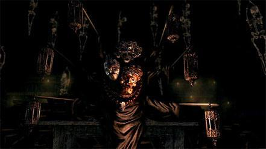

A Dark Souls Remastered walkthrough is an incredibly helpful thing to have for players new and old
- this is a famously hard game, and one that's also not always so easy to decipher even when Basilisks aren't
turning you to stone.
A good Dark Souls walkthrough won't just help you survive, but even thrive in the cutthroat realm of Lordran,
with info on bosses, dungeons, weapons and more.
We'll lay out everything you need to know about Dark Souls Remastered below - good luck, undead...

Walkthrough
A Quick Note On Patience
You've probably heard some advice from players and websites that the game requires heavy doses of patience,
but what does that really mean? If you're a beginner at this game, consider the following thoughts:
- EVERY ENEMY IS CHALLENGING. If you go into a fight or a new area realizing that there is inevitably
an enemy
waiting around the corner who can kill you within seconds, you'll live much longer and save time scrambling
to
recover your lost souls and humanity. Even at high levels, if you underestimate the weaker enemies, they'll
often find a way to make you regret it. Take your time and properly execute every fight (even if you've
already been through this area dozens of times). ALWAYS enter a new area with your shield raised or at the
ready to dodge a trap.
- Boss fights are about OBSERVATION, STRATEGY, and EXECUTION.
- Observation: What is the boss's move sets? Which animations trigger which attacks? How long
does it
take the
boss to complete every action? When is the boss vulnerable? Are there any changes in
elevation/obstructions
that can prevent the boss from hitting you? For how much time is the boss vulnerable after an attack?
Strategy:Strategy can be broken up into two separate categories...
How do I keep myself alive? Which attacks can be parried, blocked, countered? Which cannot? How much
damage
does each attack do? When is there a moment of respite to heal? Does the fight require blocking/tanking
or
agility/quickness?
Once you've figured out how not to die...
- How do I kill the boss? When is the best time to strike? Where must I be positioned to hit the
boss? What
weapon is best used for this fight? Do I need any ranged weapons (magic, arrows, firebombs)?
- Execution: Practice, practice, practice. Even if you look up a boss fight online it is highly
unlikely that you
can pull it off on your first try (at least for most bosses.) The strategies and hints that someone else
told
you came from their own observations and strategizing, so try to fine-tune their methods to suit your needs.
Because of the variety of play styles available within the game, bosses can similarly be beaten in a variety
of different ways.
- NEVER make a decision impulsively. Unlike some RPGs, there is no way to save the game, attempt a
decision,
reload the save and try again if you're unsatisfied. Every decision is final and has a consequence. Whether
it
means requiring you to put in hours of grinding later on as a result of mismanagement of souls, or the
inability to access a certain crucial item (until New Game +) because of a poor decision, most decisions in
the game are muddy and have upsides and downsides. Try focusing on planning long-term, because the game does
get progressively harder (as difficult as that is to imagine.)
Characters Classes
Classes in Dark Souls determine the starting Stats and Equipment of the player. There are 10
Classes in Dark
Souls that the player can begin the game with. They are listed below:
Classes do not determine what weapons, items, armor, or spells your character is able to use, they only
determine what your character starts the game with. As you progress through the game and raise your levels,
your character can potentially take up any role regardless of class.
In addition to choosing a class, players can choose a gift to begin the game with. All gifts can be found in
the game later on, but taking one here can let the player enjoy a benefit they wouldn't normally have until
much later. A first time player should be careful about choosing gifts that will let them enter end-game areas
from the start of the game such as the Master Key, since they could potentially end up stranded in a very
difficult area without the knowledge or equipment to get back out. Note that the Master Key is infinitely
reusable, and the Thief starting class begins the game with one already. Taking a second Master Key as a Thief
is a waste of a gift.
The cost of raising a level increases as your character's level increases. The amount of souls each level
costs is the same for all classes, though classes begin at different levels. For example, a character that
starts at level 1 may find leveling up to be extremely affordable, but the character who starts at level 10
didn't have to pay anything to get to that point. When the level 1 character reaches level 10, going from 10
to level 11 will cost exactly the same amount of souls as it would for the character who started at level 10.
Because of this, starting at a lower level actually ends up costing more overall, however the player will be
able to put their stats exactly where they want them instead of starting with a more pre-determined kit. The
starting level of a character ignores the Resistance stat, so characters with high resistance start at lower
levels than they would normally have otherwise.
Weapons
Weapons are a very strategic and important choice for the player in Dark Souls and Dark Souls
Remastered. The
player is encouraged to discover and learn the playstyle of weapon that suits their style of play and
preference, with subtle parameters affecting the weapon's performance in combat. A player will be able to
dedicate themselves to mastering one weapon, and expect to perform well regardless of the choice. The game
hopes to create a bond between the player and their chosen weapon
Some Weapon Notes:
- Weapon damage formula is: (base damage)*(n/10+1) where n is the number of upgrades.
- See Weapon Scaling to understand what the Parameter Bonus letters mean
- See Damage Types to understand the different ways that damage numbers are calculated and resolved.
- You can also create Boss Soul Weapons which are crafted from the souls that are dropped by certain bosses.
- For definitions of terms and images used in the weapons tables and pages, refer to the Table Key andWeapon
What is the best weapon in Dark Souls?
There is no "best" weapon in Dark Souls. Players can craft Character Builds around specific weapons that have
specific movesets, deal good damage, or are easily obtained at the level range the player wants to play in.
Some players choose weapons for their cosmetic appearance, but in most cases it is advisable to refer to the
scaling and Upgrades of weapons to determine if the output is beneficial to the character in pve, pvp or both.
The following categories of weapons have details on their base damage, and all individual pages feature
infusion charts, with some extending to full moveset videos. But here is my top 5 best weapons in
darksouls:
Oolacile Catalyst
Dragon Tooth
Greatsword of Artorias
Gargoyles Halberd
Zweihander
Bosses
Bosses are unique and powerful enemies in Dark Souls and Dark Souls Remastered. Defeating
bosses affects the
world of Lordran, limiting multiplayer invasions and progressing flags in NPC questlines. Bosses can only be
defeated once in your own world, but you may join and assist other players with their battles by going online.
Keep in mind that special dropped weapons from boss tails can only be obtained in your own world. You can also
receive a Boss Soul to create Boss Soul Weapons when you defeat your own world's bosses.
This page compiles the list of boss encounters, as well as some mini-bosses and non-respawning enemies through
the game. Strategies for defeating them are found on their respective pages. See also Enemies.
These Demons are mostly located at the end of each area. They are distinguishable by the fact that their Name,
and health-bar, shows up at the bottom of the screen. The battles also takes place in arenas, blocked by
fog-gates.
- Not all bosses are mandatory for game completion. Optional bosses have an * marker next to their name on
the list.
- Several bosses can be skipped if following a specific, advanced Game Progress Route.
- The Demon Firesage can be skipped only if you are in the Chaos Servant Covenant (Rank 2).
- We have not added a * to bosses that may be skipped via cheating, exploits or other non-intended
mechanics.
Asylum Demon
The large demon found during the tutorial in the Northern Undead Asylum. This boss is very similar to the
Vanguard in Demon's Souls in both attack style and appearance in the story. After escaping
from your cell
and lighting the first bonfire, the next step is to open a large set of doors leading to another courtyard,
surrounded by large vases.
If you stand in the doorway and look up, you will see the Asylum Demon waiting above the area at the
far
end. As you enter the room, he leaps down. You may either fight him then or escape via a gate that closes on
crossing it, on the left side of the area. If you choose to evade, you will still have to face him a little
later, but with the benefit of having more equipment.
During the second encounter, you will find yourself on a platform above him, giving you the opportunity to
perform a powerful plunging attack to radically reduce his health and even the odds. Killing the asylum
demon during the first encounter(not escaping through the door) will grant you the Demon's great hammer as
discussed below, while killing him during the second encounter will not.
Strategy
To receive his Demon's Great Hammer you must slay him the very first time you meet him, before going through
the gate to the left where most of your equipment is found. It is also possible to obtain another Demon's
Great Hammer later after returning to the Asylum, if you trade a Sack to Snuggly. So do not worry if you are
unable to defeat the Asylum Demon the first time you face it.
The second encounter will start you on the ledge above the room, begin with a plunging attack to take off a
large chunk of his health. It is recommended that you two hand your weapon, for maximum damage and to do a
jumping attack, instead of simply falling down from the ledge and pressing R1; it counts the jump attack
damage along with the plunge attack.
The fight is not too difficult, as your foe is slow, and so are his attacks. Stay close to him and circle
either to his right or left. Wait for him to begin any attack, and counter or just cycle around foe and his
attacks are slow. Try to get behind his left leg so when he turns around he pushes you with him which enables
you to almost constantly attack him without having to dodge. Players with offensive spells or pyromancies can
also elect to stand off and simply kill him with ranged attacks, although you will not obtain the proper
catalysts or pyromancy flame until after the first encounter. Do not spend too much time on the balcony ledge
above him, as he will bring the fight to you, as mentioned previously.
While defeating the Asylum Demon during the first encounter in NG can be difficult due to a lack of good
equipment and no Estus flask(s), it can be accomplished either through careful maneuvering and/or a smart
selection of a starting Gift. Although the Master Key is generally recommended as a starting Gift, the
selection of the Black Firebomb(s) will enable players to kill the Asylum Demon easily during the first
encounter and obtain his Demon's Great Hammer.
- Notably, Thief characters automatically begin the game with the Master Key in addition to their starting
Gift,
so starting the game as a Thief and choosing the Black Firebombs is an easy way to obtain both the Master
Key
and the Demon's Great Hammer very early in the game.
Defeating the Asylum Demon during your first encounter in New Game Plus and beyond is trivial, as you
begin
the new game with all your equipment and spells retained.
Bell Gargoyles
Located on the roof of the Undead Parish, guarding the path to one of the Bells of Awakening. Not just one,
but two of these halberd-wielding, fire breathing demons must be killed for the player to proceed.
Strategy
A good shield will block most of the Gargoyle's attacks, but the fire will still deal some damage
even
when
blocked, so try to stay out of its range when the second one joins. Focus all attacks against the first
Gargoyle, even after the second one appears. Run away if they start ganging up, to divide and
conquer.
When
one is killed, get in close to the second Gargoyle, and its fire breath will be useless.
Despite breathing it, the Gargoyles are vulnerable to fire, so a few Firebombs will help during this
fight.
If you have summoned a helper, it can be useful to split attack duties between the two Gargoyles, as
it
is far
easier to keep from getting ganged up on when each Gargoyle is focusing on a separate target. For
example, if
an NPC is attacking the first gargoyle (and you have already chopped off its tail), go after the
second
one
and let the NPC keep the first one's attention. Since the second gargoyle is exceptionally fond of
using fire
breath, you should have plenty of opportunity to assault its flank and take it down quickly - and you won't
get a surprise blast of fire on your backside.
At the opposite end of where you start the fight, at the each side of the bell tower there are narrow paths
that seemingly make for a good hiding place. Do not go there! The gargoyles can't reach you with
their
weapons, but their fire breathing will. Additionally, they block you inside making it exceedingly difficult
to
break out.
A very easy way to beat the Gargoyles is by summoning Lautrec and Solaire. After talking to Solaire
and
getting the White Soapstone, find the mystery key and free Lautrec in the church. Quit the game, talk to him
in Firelink Shrine, and go to the Gargoyles' fog gate. Solaire's sign is right before the door while
Lautrec's
is on the opposite side of the room, one ladder down. They're both pretty hard to miss and if you use these
two phantoms the Gargoyles>/strong> become very easy to defeat. Lautrec is nearly invincible against them with
his
heavy armor, and Solaire can dish out a fair amount of damage with his Lightning Spears.
Capra Demon
The Capra Demon is the boss of the Lower Undead Burg. You can get to him either by going left, down to the
end of the main street (past the Undead Assassins and Undead Dogs), or by going through the shortcut in the
waterway in the Firelink Shrine after you unlock it.
This boss is highly susceptible to fire, therefore, any variation of the Firebomb or a Charcoal Pine
Resin-coated weapon, will go a long way.
This particular boss is later found in packs, in the Demon Ruins, where they can be farmed for a decent
amount of souls, and potentially, their weapon. See more below.
Strategy
Upon entering, be prepared to be immediately attacked by all three enemies. Circle around to the right
(dodge
the boss's first big swing) and run up the stairs on the left side of the arena, the dogs should follow you;
take your opportunity and kill them to make this battle a lot more bearable. However if they don't follow,
try
to lure them up - this will most likely lure the boss as well.
Killing the dogs quickly is critical to winning this fight as it is entirely too easy for them to stunlock
you
until the Capra Demon lands a killing blow. If he follows you up the stairs before the dogs are dead,
feel
free to drop down and get a bit of distance from him and make another attempt.
Strategy A - Mano-a-Mano
Once the dogs are dead, back up along the narrow stone bridge at the top of the stairs. Don't go all the way
to the wall, because the boss will crowd you up there. He may not hit you there, but it can be dangerous so
remember to guard. If you are not all the way at the wall, he should jump from the stairs and miss entirely.
From here, you can perform a plunging attack (RB + above enemy) on him from the stairs to do some very
decent
damage and make your battle easier. From here, there are two sub-strategies to employ:
- The best thing to do after you've gotten the is lure the boss all the way to the top of the stairs.
Guard with
your shield and wait for him to swing a few times and get really close to you. Then you can get in a few
swings with your weapon before he falls off. If you fall off with him, run back up to the top of the
stairs.
Rinse and repeat until he dies.
- If you feel like going toe-to-toe, just keep a close eye on his attacks. The two-sword swing can't be
blocked
entirely but can be easily evaded and you may be able to get a hit off before he recovers. His leaping
attack
is also useful for getting in a hit or two; if you're at close range and manage to slip to the side his
back
will be to you.
Strategy B - Plunge & Repeat
Also as above, run right so that you are standing on the narrow shelf. Try to stand in the middle of the
ledge, and keep in mind that the demon may follow you. If he comes up, when he gets onto the ledge with you,
drop down and run. In most cases the demon will drop down after a couple seconds and attempt to follow you.
However, if you run back up the stairs as the demon is dropping, it will (ideally) turn and try to face you,
becoming "stuck" for a moment as it attempts to maintain its targeting.
As you run back up, the demon may attack but will most likely miss, as it will be aiming for a spot behind and
below you. Be ready to block anyway. Once on the ledge again the demon will be right below you, vulnerable to
a plunging attack (RB + above enemy), just like the strategy earlier, only this time, you rinse and
repeat
this to make short work of the boss.
Ceaseless Discharge
Not only an imposing fire-based boss found in the Demon Ruins, Ceaseless Discharge, as his name may suggest,
is the source of the lava flow. Killing him will cease the discharge of lava in the lower parts of the
ruins, allowing access to the deeper areas of the map, and progress in the campaign.
He was also confirmed to in fact, be the younger brother of the Daughters of Chaos.
He's a passive enemy unless you attack him or loot the Gold-Hemmed Black Set, in which case, he becomes
hostile.
Strategy 1 - Stair Melee Method
Once you have caused him to become hostile, you will want to run back around the L shaped hallway and down
the stairs to wait for the boss. When the boss starts walking past the stairs you will want to run back up
the stairs and wait for him to preform his attack animation. When he starts to attac, run down the stairs
and wait for the smoke to clear from his arm and then run up and land a few attacks. Rinse and repeat this
method of baiting and running until he is dead.
Note: His sideways slash attack will always go over your head if you run down the stairs.
Strategy 2 - Line of Sight
Head to the large rock mass near where the Gold-Hemmed Black Set is to be acquired. If traveling from the
armor location, make your first left and stop at the corner. You want Ceaseless Discharge to be around about
the stairs. Have him spot you, and as he charges a single overhead melee attack, evade it by rolling to the
right ONCE. As soon as the attack lands, quickly move back into position and attack. Ceaseless Discharge
will almost always use a single overhead melee attack if you are spotted in this precise location - at the
corner of the pathway, perhaps a few steps closer to him than the corner itself.
This is dangerously close to being in range of his Fire Breath attack, so you may need to experiment with
the positioning until he only uses his single overhead melee attack, which is easily evaded with no damage
taken. One you've got it on lock, rinse and repeat.
Centipede Demon
This demon is a large bug like creature which defends the path to Lost Izalith. Its arms and tail are
separate living centipedes. The boss has a tendency to stand on the lava after walking through the fog gate
and repeatedly use his reaching attack. For someone who is not in possession of the Orange Charred Ring or
ranged attacks, this can be extremely annoying.
Strategy
First and Foremost, run over the lava, around the corner on the right. Hidden behind that corner is a large
field where you can properly fight him.
One method to make this fight easier is to cut off his tail from the beginning. If you can lure him to stand
over you, you can hit him and be relatively safe, keeping up your block when he motions for an attack, just
in case. His tail has a mind of its own, and can be like fighting two enemies, so be sure to take care of it
early on. The Centipede will become crazy after the tail cutting and will run through walls but you must
stay behind his back feet. The tail will grow back so cut it off again.
Dodge his arm extension move once he gets close, and run up to him. Be sure to stay below him, and hit his
ribcage, that's the safest place for melee build.
The Centipede Demon will use AoE attack when its health is low, so make sure to pay extra attention to his
attacks when his health dips. Using a shield with decent stability will improve your survival odds.
Chaos Witch Quelaag
A half-woman, half-spider demon located in a lair near the bottom of Blighttown. One of the Witch of
Izalith's daughters, transformed into a monster by the Flames of Chaos. Her notable siblings are The Fair
Lady and Ceaseless Discharge. She guards the second Bell of Awakening, and the entrance to her sister's
domain.
It may be worth knowing that she only fought you to protect her sister, who is in a permanent coma-like
state So when you enter her sister's domain and talk to her, she thinks you are her sister, which is later
revealed if you talk to her whilst wearing the Old Witch's Ring.
Strategy
For those having trouble with Quelaag, one way in which the fight can be made easier is to go into
human
form while in the swamps at the bottom of Blighttown. An NPC dark phantom called Maneater Mildred will
invade - her reasonably slow attacks and lack of armor make her a fairly simple foe. Once she has been dealt
with, her summon sign will become available outside the fog gate leading to Quelaag for those still
in human
form. She is an effective meat shield and seems oddly resistant to Quelaag's lava and fire wave
attack, and
helps further by dishing out a not inconsiderable amount of damage. As such, Mildred's help can prove
invaluable to those otherwise having difficulty.
Player summons from the nearby bonfire at the bottom of Blighttown can also make this fight easier than even
a typical multiplayer boss fight. Quelaag's AI can be unstable when she has multiple foes to choose
from,
and she often abandons pursuit of one target when another injures her (also allowing players to rescue one
another if one gets trapped by her).
Given her fairly slow turn speed and the long windup of most of her attacks, it is easy to trap her in her
own aggro cycle by having one player attack her a few times and then retreat so that another player may then
attack her from her rear or sides, usually causing her to try to turn around and go after the latest
attacker, which then leaves her open to other attacks by the initial attacker and so on. This is
particularly effective if one or more foes is using ranged spells or miracles such as lightning spears, as
multiple close melee attackers remain vulnerable to her powerful fire wave attack, which has a 360 degree
area of effect and a large radius.
By effectively resetting Quelaag's focus by having other players hurt her whenever she starts
concentrating
on a particular player, it is not uncommon to kill her without anyone taking any damage. One side effect of
this tactic is that Quelaag may get so rattled that she ends up boxing herself in with lava spits in
a
circle around her. Melee characters should consider bringing a ranged weapon such as a bow or throwing
daggers to help maintain aggro on her while waiting for the lava moat to start disappearing.
- The above tactic can be implemented (with a slightly greater degree of difficulty) by simply using
Mildred as a 'tank' or sorts. When Queelag is focused on Mildred, strike Queelag while she
is distracted and aggro
her (much easier with a ranged weapon, such as the short bow). If you time your attacks just right with
Mildred's, you will catch Queelag in a similar "aggro loop" as mentioned above, essentially making
the
game's aggression AI work to its detriment.
Crossbreed Priscilla
Half dragon boss found in Painted World of Ariamis. An optional boss, she wields a giant scythe and has the
ability to turn invisible. If you do not wish to fight her, simply walk past her after talking to her, and
proceed towards the open ledge to trigger a cutscene and your return to Anor Londo. (speaking with her
doesn't make her aggressive)
Priscilla is the only dragon crossbreed in Lordran and most likely in the game world.
She is white as snow and has scales, though only on her brow and neck, hinting that her father is actually
Seath the Scaleless. Her mother is unconfirmed but that won't stop us as well as other fans from
speculating:
- One theory is that her mother was the non-illusory goddess Gwynevere; Ariamis' painting is also housed
in
her cathedral, and has been kept safe by dozens of painting guardians for generations.
- Another theory is that, due to the large number of items and miracles related to Goddess Velka that are
located in the Painted World, the goddess could be Priscilla's mother.
- The rotating statue that opens the way to Priscilla is also of a mother and child, but the mother
does
not
resemble Gwynevere.
- Attacking Crossbreed Priscilla will be considered as a Sin. (NPC Hostility Sin)
WARNING DO NOT KILL HER IN A SINGLE HIT DOING SO WILL SOFTLOCK THE GAME
Strategy
Because this boss is not incredibly hard, nor has a particularly varied arsenal of moves and attacks, these
strategies are more of how to deal with her when she's invisible.
Priscilla summons a blizzard that turns her invisible if you attack her, therefore the main way to find her
when she is invisible is to keep your shield up or keep moving and watch the snow for her
footprints.
Do not spam attacks when you locate her, strike her once or twice and then roll away and block. This should
minimize the number of times you are struck by her scythe, and particularly avoid receiving a dangerous
bleed
effect as a result of repeated hits from her scythe.
If you manage to cut her health enough to reveal herself, she'll start using her blizzard attack. This is
easily avoided by running to the side, or staying behind her. Keep your distance to avoid being hit by the
scythe, or use Bloodshield or the Bloodbite Ring to reduce the bleed build-up from her attacks. If you
manage
to chop off her tail - which is what you should aim for - you get the special weapon Priscilla's Dagger. Be
sure to only aim for her tail first, to avoid mistiming it and killing her before you can obtain it.
Strategy 1 - The Hard Way
When she's approaching, you will see her footprints get closer together, meaning that she is getting ready
to
swing her scythe. To counter this, roll directly at her and run to her right. Run behind where the
footprints
are facing, and she will miss you, which gives you a chance to get an attack in. To judge where the swing is
coming from, watch for the footprints that form from her stepping forward during her attack. Rinse and
repeat
Strategy 2 - Fire & Ice
An easy way to get her to come visible is to as soon as you go through the boss fog, aggro her then run to
the
plank that you leave on and stay at the end until you see a footprint. As soon as you see a footprint on the
ground throw a Great Chaos Fireball straight ahead; because the plank is suspended over nothing and there is
no room to evade, it will hit her, triggering her visibility. Once this happens, run past her into the open
area, take off the tail, and proceed to ending her life.
Strategy 3 - Ghost Tracking
Equip Ring of Fog and Slumbering Dragoncrest Ring inside the boss area. Wait until Priscilla goes to
the
center (no footprints, shooting an arrow to the center of the room). Shooting her with man-made projectiles
such as arrows, and throwing knives work extremely well, as they stick onto her for a short period of time,
revealing her location.
A slightly more cumbersome method is to use attacks that leave a mark, which can be used to track her
invisible form. Vow of Silence, Tranquil Walk of Peace, arrows, poisons, etc. will work.
Dark Sun Gwyndolin
"Mark the words of mineself, Gwyndolin! Thou shalt not go unpunished!"
The last born of Lord Gwyn, Gwyndolin is the leader of the Blade of the Dark Moon covenant and the only
remaining deity in Anor Londo. Gwyndolin's followers are few, but their tasks are of vital importance.
Although born male, due to magic and association with the moon, Gwyndolin was raised as a daughter.
Gwyndolin
is biologically a male and is referred to as male by Gwynevere, who lovingly calls him brother. Gwyndolin
created the illusion of a sister Gwynevere to help guard over Anor Londo. An unmasking of these deities
would
be tantamount to blasphemy.
This optional boss is located by the Darkmoon Tomb bonfire, in Anor Londo, at the very bottom of the
movable
spiral staircase, behind a large statue of Lord Gwyn with a corpse lying to the left of the statue.
Note that angering Gwyndolin will be considered a sin. (NPC Hostility Sin)
Strategy
Strategy 1 - Melee
This boss is fairly easy once you master dodging its moves. The only trick here is to zigzag back and forth
to dodge his darts rather than hiding. The simple reason for this is to close the distance between the both
of you, quicker. Once you get close, hit him with your most powerful weapon. Gwyndolin will not attack you
at this range as he will instead teleport further down the hall - this prompts a short teleportation
animation that allows you to attack for a little longer. Just stick to the strategies above and Gwyndolin
will fall with ease.
Equip light armor and boosted stamina recovery, then two-hand your weapon. All the running
you're doing can
really drain your stamina, becoming ineffective when you reach the boss due to fatigue. This is why you will
want to recover stamina quickly. You want to get to Gwyndolin as quick as you can by pacing yourself,
keeping an eye on your stamina, and choosing when to exert it appropriately. You can get a good 3 hits in
with the heaviest of weapons, draining a large portion of health (Gwyndolin's defenses are pitiful) if done
properly. A lighter, lower stamina weapon such as a Falchion or Balder Side Sword can also be very effective
if upgraded, as you will be able to get more swings off with your remaining stamina at the end of each
chase. Also consider a weapon with a good charge attack such as a Gargoyle Halberd, Great Scythe, or other
polearms, as that may be the only attack you are able to land on the run before Gwyndolin teleports again.
Strategy 2 - Archer
For this one you want to hang back a little bit more. Rather than trying to zigzag out of the way of the
darts you can just sit behind the pillars. It will be in between attacks when you will want to advance
forward; keep a distance of 2 or 3 pillars from where Gwyndolin is standing to avoid triggering their
teleportation. From here, you should be able to sneak out in between attacks and hit them with a ranged
attack of your choice. Make sure to dodge the larger blue spell to avoid heartache.
Any Bow: After Gwyndolin teleports for the first time, stay where you are and shoot 6-7 poisoned arrows at
him. To hit from this distance, you can arc arrows by aiming just above him. It may not show damage on hit
but he'll get poisoned and will start losing HP very slowly (probably 3/sec). It takes
approximately 100
arrows to take half of his HP on NG+. It is also possible to use fewer arrows to protect the
poison. I
recommend using wooden arrows to ensure you hit the target, then switch to poisoned ones when you zero in.
It is also possible to do direct damage using range boosting gear, such as the Hawk Ring + the Black Bow of
Pharis + Feather Arrows. The damage will be low, but can be combined with poison buildup to kill Gwyndolin
in relative safety.
Dragonslayer Greatbow: When you first enter the fog Gwyndolin will teleport away after just a few
steps
toward him. After Gwyndolin teleports, take a couple steps backwards and you won't be attacked. If you use
this bow, you can do about 100 damage per shot without aggro-ing the boss. It helps to have the Hawk Ring to
increase your range.
Demon Firesage
A large demon found at the end of the Demon Ruins. It very closely resembles the Stray Demon and Asylum
Demon, though its behavior and abilities are much more closely related to the former of the two bosses.
Strategy
It moves and acts like a more powerful and faster version of the Stray Demon, so employing the same
tactics with quicker responses, works well. It is for that reason that it is recommend to not lock-on to the
Demon Firesage for this specific battle, as you will have to do a lot of running to and away from him.
Strategy 1 - Mage
This is the easiest way to take him down easily because of the weakness to magic. The recommended steps are
the following:
- Equip a shield with good stability and enchant it with Magic Shield (Greater Magic Shield for better
effect)
.
- Enter the Fog Gate, cast Homing Soul Mass (or Crystal Homing Soul Mass) and immediately raise your
shield to
block his jumping strong attack.
- After blocking his attack QUICKLY run behind him to dodge his Wave Attack. After this, you are
free to cast
another Homing Soul Mass, and Souls Spears (or Great Soul Arrows).
- Be careful, stay close, and run behind him when you see that he is going to do a horizontal attack, this
means he is going to follow with the Wave attack. If you're too far away from him he will do the jumping
strong attack. Block it because it's very hard to dodge.
- Rinse and repeat until he dies.
Note: The Crest Shield +5 is good option following the steps above. It can also be enchanted with Magic
Shield and can block the Wave attacks reducing their damage by 90% (aprox.). Also it's highly recommended
that you wear light equipment (25% or less).
Strategy 2 - Tank
If you've designed your character to be a stamina/defensive powerhouse you can actually tank the Firesage
with ease. Here's how you do it:
- Equip Havel's Armor combined with the Crest Shield and Wolf Ring to grant you magic defense and make
yourself as immovable as possible.
- Once the battle starts, move as fast as the heavy equipment allows and position yourself right in front
of
him. If he does his horizontal magic slash: Simply turn around with your shield up so you are facing the
same direction as him. The blast will hit your stamina hard and deplete a small amount of health but the
time you would have spent running around can now be used to get some hits in. This time is also plenty
enough to drink the occasional flask to keep your health topped off.
- To make turning around easier I recommend keeping target lock off.
- In regards to his other attacks: move back to a safe distance when he initiates his downward stab AoE
and
butt-slam attacks. Once up close I found he very rarely did his physical vertical slash attack but this
can
be avoided with a side roll. Happy tanking!
Four Kings
The wraith-like remnants of the four leaders of New Londo Ruins who fell to dark after being tempted with
the art of lifedrain. Defeating the Four Kings is necessary to the plot, and is also needed for those
players wishing to join the Darkwraith covenant as they must defeat the Four Kings before obtaining the
Lordvessel from Anor Londo and talking to Kingseeker Frampt.
You can also obtain the Lordvessel then go to
Strategy
The Abyss can be a confusing place to those entering it for the first time. By its nature, there are few
visual cues as to the direction the player is moving, and it is easy to get disoriented. The first King will
not appear instantly, so it is important to continue rotating the camera, as the King may appear from any
direction in this shapeless void. It will first appear at a distance, so try to spot it as quickly as you
can. If you're not a mage, it's recommended to have good poise and just charge the first King to reduce the
likelihood it starts using ranged spells.
Strafing to one side as close to the King as much as possible possible, will allow you to repeatedly land
your stronger melee attacks. It is generally better to attack rather than to try block, so two handed
weapons often work better. Leave yourself just enough stamina to block or roll if you get into trouble, and
make sure to top off your life bar whenever it drops below 50 percent. Having 15-20 Estus +5 or higher, can
make a big difference. You may also have time to use Humanity items during the fight or if you kill each
King before the next appears.
Try to defeat each King as quickly as possible after it spawns, as the continuous spawning is on a timer and
you can give yourself breathing room between wraiths if you kill them quickly.
Keep attacking even after defeating a King as you can still deal some overall damages during the death
animation of the defeated King.
Gaping Dragon
The Gaping Dragon is the boss in the Depths, and gives you the key to the upper entrance to Blighttown.
This boss is optional with the Master Key as one's chosen gift during character creation, which can be used
to enter Blighttown through the back entrance in Valley of Drakes. This is most easily accomplished by
simply taking the elevator down from underneath Firelink Shrine, and then circling around into the adjacent
building, unlocking the barred door with the Master Key, and then proceeding across the narrow footbridge
into the dark cave on the other side.
Blighttown's back entrance can also be accessed from the Darkroot Basin entrance into the Valley of Drakes
without the Master Key. Enter the valley either by taking the elevator down from Darkroot Basin, or kill
Ingward and enter from New Londo Ruins. However, that route is more circuitous and requires you to fight or
evade some powerful enemies in the Valley of Drakes in order to double back to the Blighttown cave entrance.
Strategy
When you first enter the room, keep your distance. Aggravate it and wait for it to drop its head and to
start to do a dash attack. (The ground will start shaking when he does this). After he starts to dash just
keep to his left or right to avoid being hit; after this, run behind him to his tail.
He will hit the wall and be stunned for a few seconds, this is your chance to do some damage and hopefully
cut off his tail. Repeat this, and you should be able to whittle him down without taking any damage. The
only change in this fight is the Acid Throw-Up he begins to use when he reaches 33% health.
By cutting off his tail he can no longer attack you with it, also drops the Dragon King Great Axe. Note that
only part of his tail can be cut off, and attacks on the portion closer to his body (i.e., the stub that
remains if the tail is removed) will not cut the tail off, and will just do damage normally. There is a
noticeable ring around the tail at the location it can be cut off; attack the tail below that ring to cut it
off quickly. If you are directly behind the boss and within melee range, there is a slight chance that the
remaining stub of his tail will hit you.
Players should make sure to run from the yellow acid it breathes out onto the floor, which corrodes
equipment quickly. The acid radiates out from the dragon quickly and for a fairly long distance, so retreat
immediately as soon as he winds up for this attack. Thankfully, the leading edge of the spreading acid seems
to cause far less corrosion than being fully engulfed by it. The acid can damage all equipped items,
including weapons or talismans/catalysts/pyromancy flames that are equipped, even if not in active use.
Having the means to repair at least your primary weapon, such as some repair powder, can avoid the risk of
having to go into your inventory to equip another weapon or item during the fight.
The yellow acid seems to act as a sensory locator, as Gaping Dragon seems to charge in the direction of
where the player was at the time of the breath. Keeping a good distance and moving immediately after the
fluid dissipates will allow you to get into position more quickly after the charge. This could possibly also
be due to the attack lowering its head, as it doesn't appear to have eyes in its ribcage.
Here are a few additional tips:
- Being able to roll well and sprint faster can really help in this combat, so don't overburden yourself
with
heavy of armor. The Dark Wood Grain Ring makes the fight significantly easier.
- One basic thing to note which makes avoiding him easier is that when he is standing upright he can be
outrun
but has a sharp turning radius and is very hard to move behind, but when he is on all fours he is
impossible
to outrun but has a terrible turning radius. For a ranged fighter, positioning yourself safely out of his
reach based on his two stances is just about all you need to know to easily solo this boss.
- Another easy way to defeat this boss is to wait until he rears up and then charges you, lock on and use
sorcery or pyromancy to take out part of his life. Rinse and repeat. Keep clear of legs when charging.
- A strategy can be used to avoid damage all together by baiting the dash attack. After the Engorge front
slam, which can be baited even when standing out of range, running round the side and running up to his
tail
region once the charge has finished allows you to get in a few seconds of attacks. Then run away out of
range and rinse repeat. A surefire strategy simple even to the newest of Dark Souls players.
Great Grey Wolf Sif
A very large wolf who resides in a serene graveyard, across the river from Darkroot Garden. It can also be
reached by climbing up the ladder close to the Hydra in Darkroot Basin.
According to lore, Sif was Artorias the Abysswalker's partner. When Artorias was swallowed by the
Abyss, he
threw up his Greatshield to protect Sif, as he could no longer bear it with his arm broken. Now, Sif
guards
their fallen comrade's grave and his ring, to ensure that what happened to Artorias, doesn't happen to
anyone else.
The name Sif itself is a female name of Norse origin. However, all translations into European
languages with
grammatical gender use male gendered language for Sif, though many of them can be interpreted as the
most
neutral phrasing of the name. This includes French, Italian, German, Spanish, Polish, Portuguese and
Russian.

Strategy
Stay close to the wolf! The danger lies in the lengthy attack range, but by sitting under Sif, she
will miss
completely. Get in as many hits as you can before Sif eventually flips away, timing yourself to get under
the belly of the beast once again.
The easiest way to to get underneath Sif is by waiting for a swing, then roll under her front legs. Just
lock on to Sif and back up while waiting for her to swing, after the first swing get your shield up
and run
underneath her. This is also a simpler way to avoid the 360 attack, which will always come from the left
swinging to the right. Make sure you stay in the middle and back up in a circle to avoid getting pinned
down. Attacking her legs will make them limp, disabling her mobility (Jumping/Running).
Also, unless you have an uber shield with amazing stability and/or godly stamina, Sif's two loop
spin will
most likely break your guard/stamina. Another way is to block the first hit then roll toward the next attack
direction. The Eagle Shield found just past the upper bonfire in Blighttown is excellent in this fight and
for this spin attack, for your first playthrough.
Sif will also begin to limp at the brink of death. Her attacks will become slower, and the slash
combo will
cause it to fall over and struggle for a bit before getting back up. Despite rumors that attacking her sword
at this point, will cause it to break and her to flee, there is no such forgiving option.
As you try to figure out how on lordran you can spare her life, you realize the true evil of the creators in
making you kill a limping, almost defenseless doggo.
Gwyn Lord of Cinder
Gwyn, Lord of Cinder was a mighty warrior and the greatest of lords. He was known as the Lord of
Sunlight
and headed the efforts to end the Age of Ancients, together with Gravelord Nito, the Witch of Izalith, and
the dragon-traitor, Seath the Scaleless. Commanding his knights, he led the Lords to victory and oversaw the
Age of Fire. Despite being partially bequeathed to the Four Kings and Seath the Scaleless, his soul remains
"a powerful thing indeed".
Around a thousand years prior to the start of the Dark Souls game events, Gwyn sacrificed himself to
link
the First Flame. His reasons for doing so are disputed, but what is certain is that his principal motivation
was to postpone the end of the Age of Fire. He was succeeded by his children: his firstborn, the banished
God of War who lost his status as a deity; his daughter Gwynevere, the Queen of Sunlight; and his lastborn
Gwyndolin, his "repulsive [and] frail" son who Gwyn raised as a daughter due to Gwyndolin's affinity for the
Moon.
It will come as no surprise to anyone who has spoken to Kingseeker Frampt, Darkstalker Kaathe, or the
illusion of Gwynevere, that Lord Gwyn is the final boss of the game, and that it is the Chosen
Undead's goal
to either succeed him and end further Undead sacrifices, or start the Age of Dark: the apparent age of
Humanity. Lord Gwyn can be fought after acquiring all Lord Souls and Lord Soul Shards and returning
them to
the Lordvessel at Firelink Altar, which will grant access to the Kiln of the First Flame. After fighting
past five of his Black Knight, a Hollowed and haggard Gwyn awaits at the site of the First Flame, presenting
himself as the final challenge.
Strategy
Gwyn has many different attacks, mostly involving a non-stop barrage of sword swings which will take down
your shield and stamina quickly. So while he may seem as if he hasn't got any weaknesses, rest assured
knowing he does, and if timing is one of your strengths, then you're in the driver's seat; Gwyn CAN BE
PARRIED.
The standard strategy is to keep Gwyn far enough away so he misses his attacks made against you, while
adding a combination of rolling and quick attacks and backing off. This way you can slowly whittle away his
health and beat him. Also, hiding behind one of the large rocks near the center of the room so he hits the
rock rather than you can be an advantage; when he goes for a grab and misses, go in for a hit and back off.
You can also hit him after he finishes his 3-4 hit combo.
Iron Golem
The last trial of Sen's Fortress, the Iron Golem. The boss is located on a bridge at the top of the
fortress, and must be defeated in order to reach Anor Londo.
Make sure to kill the Firebomb Giant atop the tower first, by ascending the stairs in the same room
as the
fog gate. If you do not, he will start throwing huge firebombs into the fight with the Golem, making
it much
more challenging than it needs to be.
Strategy
When you start this battle, you will be on the opposite end of the area from the Iron Golem. Take note of
where he begins; it is on a narrow path with sheer drops on either side. Hurry over to it, and get ready to
attack. You will need all the power you can muster here. Blocking will be challenging as the Golem's swings
will eat up large amounts of your stamina.
Consider putting your shield away and going in two-handed. Immediately move through the Iron Golem's legs
and start attacking his back heels. You need to be careful of certain attacks while here, in particular the
Grab and Sweep, or his stomp (he grabs back through his legs, so don't go thinking you're invincible back
there). Getting hit by either of these could result in being knocked off the platform yourself, killing you.
Nevertheless, you should stay positioned behind either the Iron Golem's feet. While here, you must attack as
often as possible, concentrating attacks on one leg if possible. If you can do enough damage to a foot in a
short enough span of time, he will start wobbling. This is the signal for you to keep piling on the hurt; do
this enough and the Iron Golem will trip and fall over backwards, for a long enough time for you to deal
some serious damage. If you can make this happen on the narrow strip of platform where the Iron Golem first
appeared, he will fall backwards off the platform and die instantly.
A higher-leveled hero can weather his blows with a tough shield and slog it out, blow for blow. Someone with
good timing and a lighter weight armor could play the maneuverable route and dodge and dive for the victory,
as most of his attacks are well-telegraphed.
A Spear will probably hinder you here (you might be considering using the lightning spear you just
picked up), as many of your attacks may whiff harmlessly at the nothing between his legs.
Moonlight Butterfly
This is the boss of the first area of the Darkroot Garden. It can be found at the top of a moss covered
staircase past the sleeping Stone Giants. The battle takes place on a long stone bridge with the
Moonlight
Butterfly flying next to it.
Unlike most battles, much of its combat is purely ranged and one-sided; the Moonlight Butterfly will
keep
its distance from the bridge for a majority of the battle and simply fire projectiles at the player.
Strategy
Melee
- Target the Butterfly and strafe with it, keeping it as directly in front of you as possible. You've got
leeway, but you need to be able to roll to your sides in order to dodge its attacks.
- When it starts to charge an attack, roll just before it releases the attack. Roll again immediately, if
necessary -I like to roll back toward the direction from which I rolled the first, but it's not terribly
important - just keep up with The Butterfly. Repeat.
- When the beam attack is used, press up against the wall closest to the Butterfly and roll once the beam
nears your position. Timing is key here, and if you get it right, it will go just swimmingly.
- When it lands, beat it to a pulp. Avoid it's explosive attack, which should be easy as it charges up for
a
while. Repeat this every time it lands, obviously.
- When it flies over you, hide behind the door you came in.
Nito
Holder of one of the four Lord Souls, Gravelord Nito was among the lords to wage war against the
dragons. As
the Lord of Death, Nito rules over the dead in The Catacombs and resides within the Tomb of Giants.
His army
of skeletons guard his tomb, while his Gravelord Servants spread death through the Eyes of Death.
You can join his covenant via a coffin next to the Titanite Demon, in The Catacombs. However, should you
kill him - which you eventually have to do in order to progress with the main storyline - you will not break
the covenant but will be unable to further level within it, until NG+.
Strategy
It is highly recommended upon entry to this boss fight, you stay put and let them bring the fight to you;
traversing too far in will result in attracting all the Skeletons that lurk in the corners of this area - of
which include Giant Skeletons. Staying put will reduce the number of enemies you have to deal with, in
addition to the boss. When the fight begins, stay put. Use a divine weapon to keep the Skeletons that come
after you down. If you are not in possession of any, keep knocking them down until Nito arrives.
Make sure you equip either armor with high poise or the Wolf Ring, to prevent an interruption on your
combos. Most of his basic attacks are easy to dodge. Strafe around him when he gets close and whack away.
With the more complex moves, take the precautions and safety measures listed above, accordingly. Refrain
from traversing deeper into this area during combat and stick to the entrance area.
After he uses his Death Wave attack, most of his Skeletons will be dead so take this opportunity to move in
and do some damage. He also moves extremely slowly and is very susceptible to fire, so going in with an
array of Pyromancy Fireball/Chaos Fireball spells will go a very long way.
If you have a divine weapon to dispatch Nito's minions, he becomes one of the game's most laughably easy
bosses for a heavy melee build. You can easily strafe behind him for free hits, and all of his attacks
except the Sword Dance and the Death Wave can be blocked, resulting in negligible damage.
Dragon Slayer Ornstein
Ornstein is the captain of the Four Knights of Gwyn Lord of Cinder, serving alongside Artorias the
Abysswalker, Lord's Blade Ciaran, and Hawkeye Gough. As his name would suggest, he was an honorary dragon
slayer.
He wields his Dragonslayer Spear, a sword-spear after the fashion of Gwyn's Firstborn's own weapon. He also
commands the power of lightning. It is believed that he was left behind with Smough to guard Anor Londo's
cathedral after the gods fled.
However, there is reason to believe that Ornstein's presence in Anor Londo is an illusion, much as
Gwynevere
and the light of Anor Londo is a mere facade maintained by Gwyndolin. This is evidenced by his presence in
Drangleic, at Heide's Tower of Flame, where we can speculate he might have fled with Gwynevere. There is
also the matter of his armour being present in Archdragon Peak, suggesting he followed Gwyn's Firstborn
after his betrayal, with some suggesting he even shed his armour and body to become a dragon - not least as
the Nameless King echoes the Ornstein and Smough boss fight in absorbing the lightning of his
stormdrake,
The King of Storm.
Executioner Smough
The executioner for the royal family of Anor Londo, Smough dreamed of being anointed a knight of
Gwyn.
However, such was his relish for his work that he soon began to eat the bones of those he had executed.
Regarded as distasteful by his masters, the royal family never raised him to the rank of knight. Though,
after the gods fled Anor Londo, he remains in defence of Gwynevere's illusion. Whether he does so out of
loyalty to Gwyndolin or he, too, has been fooled by the illusion of sunlight is not clear.
Strategy - Ornstein
Ornstein is the faster of the two bosses, but his hitbox is narrower and his attacks are easier to
dodge.
Ornstein's smaller frame may sometimes be hidden by Smough's large body and he can also attack you
through
him. Use his Gliding attacks to get some distance between the two, or use the walls.
It is also important to keep your shield, but more importantly, your guard up when entering the arena as
Ornstein is known to close the space very quickly at times. He may also send large lightning bolts at the
host in a similarly dangerous fashion.
When Smough does a charging attack, make sure a pillar is directly between you, so that he hits it
with his
hammer. The key to this tactic is that Smough seems to path straight when charging (unlike Ornstein's
floating charge that goes around objects). As long as you move around a pillar, so that it is directly
between you and Smough, and occasionally bait his hammer blows by moving closer to the pillar, you can
effectively separate him from Ornstein, who will walk/float around the pillars to you. Wait for
Ornstein to
start a combo while Smough is behind the pillar, block or dodge it, hit him a few times, and then check on
Smough's position to make sure he is still behind a pillar. If he is walking around to get to you, simply
strafe until he is once again on the other side relative to you. This may take a few tries to get the hang
of, but the advantage of the tactic is that by separating them you buy yourself a few precious seconds
during which you need only worry about Ornstein.
Keep your attention on the other boss while attacking his partner. Move the camera to a position where you
can see both of them. Do not let them corner you and try to evade their attacks instead of blocking, as that
will drain your stamina and leave you vulnerable to his partner's attack. After he transforms, keep close to
him and attack at his legs, but watch out for the Impale, and Crash attacks. Keep up the pressure, read his
movements, and he will eventually go down.
Run backwardswith shield ready to blockand wait for Ornsteinv to attack. Hit him one to three times and
back up again. Watch out for Smough's jump attack (just roll this attack). If Ornstein is difficult
to hit,
due to being constantly close to Smough, the pillars around the room can be used to separate them
for some
quick hits.
Strategy - Smough
Smough is bigger, stronger, and sexier, but is a lot slower than Ornstein, however is quite
mobile for his
size. When fighting Smough, the player must make use of their rolls and the pillars in the room.
Adapting to
this style of play here will make this fight a lot easier. Make sure you have a decent shield and Quelaag's
Furysword or another fire based weapon. A Lightning Spear is helpful but not required for Super Smough
(Sen's fortress mimic, the Demon Spear from pink gargoyles or make one). You will want to have below 50%
carry weight at the very least; below 25% is better if you think you can do it.
With Super Smough, equip your lightning spear if you have one and position yourself the same way,
with
Smough on the opposite side of a pillar. Run around the pillar towards him with your shield up to bait his
attack. Back up to dodge his sweeps and roll to dodge his forward hammer slam. While he recovers, run around
the pillar and stab him a couple times. Rinse and repeat. The advantage of a spear is that you can hit him
from further away, making more efficient use of his vulnerable recovery time. The only attack you need to be
aware of is his electrified butt slam; when he jumps in the air, roll back twice and you should be fine.
Under 25% weight for this will make the butt-slam a joke: you shouldn't be taking hits. By standing behind a
broken pillar with enough distance between you and Ornstein, he will keep using the lightning bolt attack
and you can shoot at him from a safe distance with no fear of the other attacks.
Pinwheel
Pinwheel is the boss that lies in the depths of The Catacombs, and arguably the easiest boss in the
entire
game. You can find his chamber beyond a fog wall, across the valley floor containing blacksmith Vamos at the
bottom of the Catacombs that is being patrolled by the Wheel Skeletons.
First seen in the official Preview, Pinwheel appears to be a necromancer body of sorts, being controlled by
three magically-influenced masks. It awards one of its three masks when killed, and the others may be
purchased from Patches in Firelink Shrine, after you've assured him you are no cleric in Tomb of Giants.
Once defeated, access to the Tomb of Giants will be granted by way of a ladder in the far corner of
Pinwheel's
lair.

Strategy
Pinwheel is generally considered the weakest area boss in the game, although weakness in Dark Souls
is
relative. Most players will take damage when dropping into his lair before triggering the cinematic, and may
have a natural instinct to pause to heal themselves when the fight starts. The drop isn't too painful for a
decent level player, and a single Estus should do the trick. With sufficient speed, pressure, and damage
output, victory can be obtained very very quickly.
Pinwheel generally becomes more dangerous if left alone, as he'll begin cloning himself which makes taking
him
down harder with fireballs flying in from every direction. He will summon clones in groups of two, up to a
maximum of 8 total. While they are pretty easy to block and/or dodge, don't let yourself get surrounded.
While
targeting the real Pinwheel is the main objective here, don't hesitate from eliminating a clone or
two, to
your convenience; killing the original will make the copies disappear, so maybe that's worth a shot too.
Focusing him will result in an almost instantaneous death.
When Pinwheel drops below 30% HP any clones currently in the room will vanish. Immediately after,
Pinwheel
will summon all 8 clones simultaneously. However, this is the last time any clones will be summoned; If you
destroy them Pinwheel will be alone for the remainder of the fight.
A good fire resistant shield, such as the Black Knight Shield or Dragon Crest Shield, can also be helpful to
those who need protection from this disappointment of a boss.
Seath the Scaleless
Envy and bitterness: words used to describe Seath's betrayal of his own kind; unlike his brethren,
Seath was
born without the stone scales of the Everlasting Dragons. Seath, with the help of Gravelord Nito, the
Witch
of Izalith, and Gwyn, the Lord of Cinder, brought his own race to the brink of extinction, with many
believing him to be the last of his kind.
As reward for his service, Gwyn granted Seath the title of "Duke" and permission to build a grand
archive
where he could continue his research into his long-held desire for immortality. This archive would come to
be known as "The Duke's Archives". Along with these gifts, Gwyn also bestowed a shard of his Lord Soul upon
him.
After much research, Seath finally achieved his goal of immortality through the discovery of the Primordial
Crystal. However, the discovery did not come without a price. As the albino dragon delved deeper and deeper
into his research, his mind began to fade, and by the time he had achieved his goals, he had descended into
madness.
Becoming more and more paranoid, Seath locked himself away in the archives, fearing the other lords
would
attempt to steal his immortality for themselves. Barricaded within the archives, he sent his Channeler
servants far and wide across the land to kidnap fair maidens and the undead for his experiments.

Strategy
Make your way across the area to trigger the cinematic that will show Seath the Scaleless make his
grand
entrance, but not before emphasizing the crystal at the end of the room; this is the Primordial
Crystal, his
immortality. Destroy it, destroy his immortality. Alternately, if you are entering a second time, you'll be
required to run around Seath to reach it, but don't be too worried as it will break on one hit.
Unless you have already been defeated by Seath before, do not break the Primordial Crystal
immediately. If
he is entering for the first time, wait for him to move forward into the middle of the room, first. If you
break it too early, he will spend most of the battle right at the area's entrance, and his tail will clip
through the walls. This makes it extremely difficult to acquire the Moonlight Greatsword, and exposes you to
much greater risk from his physical or breath attacks when trying to get behind him in close quarters.
-
It is possible to kill Seath without destroying the crystal yourself. If you would like to add
insult to
injury, wait for Seath to reach you, then circle around to his tail. He'll most likely attempt an attack
on
you but will destroy his crystal, reversing his immortality and becoming momentarily stunned, which gives
you a small window to get free hits on his tail.
Numerous strategies will be effective against Seath, as he moves slowly and can be target locked from very
far away. Ranged weapons, spells, pyromancies, and miracles are all effective, as are melee attacks on his
appendages. During your first battle with Seath, it is recommended that you do not rush him, but instead
observe him to get a sense of his attack patterns and vulnerabilities. The boss area is quite large and it
is usually trivial to stay out of range of his breath attacks until you decide to commit.
Specifically, staying off to either the left or right of Seath will allow the player to take him on quite
easily. Just continue to hit his side tails until he lunges down to hit, then roll or block to get away and
face his front. When Seath goes for a frontal attack, move to his side again and attack. Repeat these
patterns until he is dead.
Stray Demon
A large demon found after returning to the Northern Undead Asylum. This is actually the first demon you see
in the game; as you exit your cell at the beginning he can be seen stomping around to your right through the
bars in the hallway.
You cannot face him during your initial escape from the Asylum, but upon returning if you walk through the
area where you fought the Asylum Demon the floor will break open and you will drop down into the Stray
Demon's arena below. This boss, while both optional and challenging to low level characters, is valued
because of its guaranteed drop of a Titanite Slab.
Strategy
It is not possible to summon in the Northern Undead Asylum, so you're on your own. Despite his superficial
similarity to the Asylum Demon you defeated to escape the area originally, the Stray Demon has a
large
amount of health and very powerful attacks. As his location is close to your arrival point, remember to
first take a short detour to rest at one of the Asylum bonfires before tackling him, to avoid spawning
elsewhere in the likelihood that you die.
After falling down into the Stray Demon's chamber, quickly run around or away from the demon to avoid
its
attack, and heal the fall damage you just sustained. It is advised to stay behind the demon as much as
possible or risk being hit by the demon's AOE magic, which has a large radius. You can block his melee
swings without taking any damage. But his red wind attacks will cause damage even if blocked (unless your
magic block is really high on your shield) and also often cause a knockdown that usually results in your
death.
While circling the Stray Demon, the best time to attack him is from behind after he has performed his blast
attack by striking the ground in front of himself with his staff. Steer clear until the blast evaporates,
then attack him before lifts his staff again. Do not attack more than twice at the most, and ideally once if
you want to get him stuck in a helpful combat loop. Specifically, if you get the pattern down, it is
possible to get him stuck in a pattern where he does not move, but rather continues to strike the ground in
front of himself and set off his AoE attack each time you attack him in the tail or the same leg from
behind.
You can then run forward between each attack and strike the same spot from behind with a single attack,
whittling him down fairly safely. A weapon with good reach such as a spear or claymore (R2 thrust attack)
will give you a little extra space and time to attack him between each of his blasts.
He may also try to Ground Pound you, but this attack is fairly easy to avoid and if you're quick to run back
to him, you can get in a couple hits on him; this is also the best time to cast magic as the process can be
long and arduous but it is an easy way of defeating the Stray Demon with little to no damage (excluding the
initial fall damage).
-
Extremely weak Against Bleed (3 hits of a bandit knife or uchigatana make him bleed taking 10% of his
health).
- The Lifehunt Scythe is also incredibly effective - two hits (wielded two handed) cut down a massive
chunk of
his health, even on NG+.
Taurus Demon
A minotaur-esque demon found on top of a narrow castle wall in the Undead Burg, on the road to the Undead
Parish. Similar to the Bell Gargoyles encountered later, the Taurus Demon does not immediately appear
when
the host passes through the fog gate. Rather, the host must travel approximately halfway across the section
before the boss appears atop the far tower and leaps down.
Strategy
The tower enter from houses two Hollow Archers, which can be accessed by climbing the ladder to the right,
as soon as you come out to the tower wall. They can and should be taken down before engaging the big boss;
otherwise, they'll rain bolts above you while fighting the Taurus Demon, which makes it very much
harder,
especially at the level you are probably fighting him. Once that's done, climb back down and proceed to the
middle, to trigger the boss' entrance.
The best way to approach this is to sprint back and up the ladder once again, and wait for the boss to
position himself directly below, for a plunging attack. This will significantly reduce his health. At this
point there are three options:
- Repeat this plunge until the Taurus dies. Multiple plunging attacks are often a safer option for
starting
players, because while the boss can and will make the jump to the tower if you loiter there for too long,
he
still gives you plenty of time to use your Estus and heal any damage he may have done to you.
- If you are confident, you can engage him in melee combat. All his attacks can be dodged but be careful
not
to get knocked off the thin walkway.
The Bed of Chaos
In a futile attempt to prolong the Age of Fire, the Witch of Izalith tried to recreate the First Flame. The
ritual was a failure and its power formed a bed of life which would become the source of all demons;
trapping two of her daughters in the orbs on either side, and herself within it.
On your way to the boss' chamber below Lost Izalith, you will be attacked by a corrupted Daughter of Chaos.
If you are keeping count of the Daughters of Chaos, excluding the spider sisters and the three we've just
mentioned, that's only 5; the body Ceaseless Discharge guards and attacks you if you loot, is another
sister, as well as Quelana - who you meet in the Blighttown swamp and asks you to help free her
sisters.
Strategy
This boss, akin to the Dragon God from Demon's Souls, is a puzzle boss. Upon entering the arena you will
notice two large, non-respawning orange orbs, one on either side of the boss. These spheres contain one
glowing root each, surrounded by normal roots; the glowing roots can be destroyed by normal damage while the
regular roots can also be destroyed by rolling into them.
The two glowing roots need to be destroyed to proceed with the fight, but doing so causes a fiery being to
emerge from the boss itself, increasing the boss' attack options and severity, and also causes the floor to
begin to crumble in specific locations. The main danger of this fight is falling into these bottomless pits.
Make sure not to sprint mindlessly as you will fall in the collapsing floor; stay attentive to the floor,
more so than the boss.
Once you take both the orbs, carefully proceed down the middle, but expect a mass chunk of the floor to fall
through. This will expose a little ledge you can jump off of and onto a thick tree branch. Before you do so,
pay attention to the pattern of melee swings of the boss, so that they do not hit you midair and cause you
to fail the jump. Run up the branch, rolling through the little branches sticking out of the cave entrance.
In here, you'll find a small tunnel with more little branches you need to roll through.